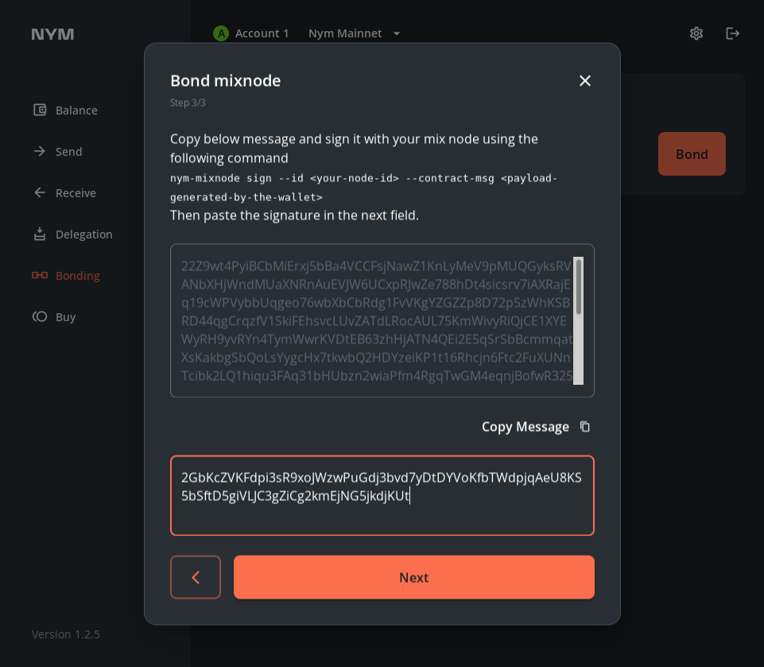

Mix Nodes
This is an archived page for backwards compatibility for existing node operators. To start a new node or migrate, follow the nym-node guides. The content of this page is not updated since April 19th 2024. Eventually this page will be terminated!
The Nym Mix Node binary was built in the building nym section. If you haven’t yet built Nym and want to run the code, go there first.
Any syntax in
<>brackets is a user’s unique variable. Exchange with a corresponding name without the<>brackets.
Current version
The last version before migration to nym-node was 1.1.35.
The nym-mix node binary is currently one point version ahead of the rest of the platform binaries due to a patch applied between releases.
Preliminary steps
Make sure you do the preparation listed in the preliminary steps page before setting up your Mix Node.
Mix node setup
Now that you have built the codebase, set up your wallet, and have a VPS with the nym-mix node binary, you can set up your Mix Node with the instructions below.
To begin, move to /target/release directory from which you run the node commands:
cd target/release
Viewing command help
You can check that your binaries are properly compiled with:
./nym-mixnode --help
Which should return a list of all available commands.
You can also check the various arguments required for individual commands with:
./nym-mixnode <COMMAND> --help
Adding
--no-bannerstartup flag will prevent Nym banner being printed even if run in tty environment.
Initialising your Mix Node
To check available configuration options for initializing your node use:
./nym-mixnode init --help
Initialise your Mix Node with the following command, replacing the value of --id with the moniker you wish to give your Mix Node. Your --host must be publicly routable on the internet in order to mix packets, and can be either an Ipv4 or IPv6 address. The $(curl -4 https://ifconfig.me) command returns your IP automatically using an external service. If you enter your IP address manually, enter it without any port information.
./nym-mixnode init --id <YOUR_ID> --host $(curl -4 https://ifconfig.me)
The
initcommand will refuse to destroy existing Mix Node keys.
During the init process you will have the option to change the http_api, verloc and mixnode ports from their default settings. If you wish to change these in the future you can edit their values in the config.toml file created by the initialization process, which is located at ~/.nym/mixnodes/<YOUR_ID>/.
Node Description (optional)
In order to easily identify your node via human-readable information later on, you can describe your Mix Node with the following command:
./nym-mixnode describe --id <YOUR_ID>
Node description is a short text that describes your node. It is displayed in the ./nym-mixnode list command and in the ./nym-mixnode node-details --id <YOUR_ID> command. It also shows up in the node explorer to let people know what your node is about and link to your website.
You can set your node description, by creating a file called description.toml and put it in the same directory as your config.toml file (~/.nym/mixnodes/<YOUR_ID>/config/description.toml). The file should look like this example:
name = "Winston Smith"
description = "I am the Sphinx"
link = "https://nymtech.net"
location = "Giza, Egypt"
Remember to restart your
nym-mixnodeprocess in order for the new description to be propagated.
Running your Mix Node
Run your Mix Node with:
./nym-mixnode run --id <YOUR_ID>
Have a look at the saved configuration files in $HOME/.nym/mixnodes/ to see more configuration options.
Bonding your Mix Node
From v1.1.3, if you unbond your Mix Node that means you are leaving the mixnet and you will lose all your delegations (permanently). You can join again with the same identity key, however, you will start with no delegations.
To initialise, run and bond your Mix Node are the minimum steps to do in order for your Mix Node to work. However we recommend to do a few more steps before bonding. These steps will make it easier for you as a node operator on a long run as well as for others to possibly delegate Nym tokens to your Mix Node. These steps are:
- Describe your Mix Node
- Configure your firewall
- Automate your Mix Node
- Set the ulimit, in case you haven’t automated with systemd
Bond via the Desktop wallet (recommended)
You can bond your Mix Node via the Desktop wallet.
-
Open your wallet, and head to the
Bondpage, then select the node typeMixnodeand input your node details. PressNext. -
Enter the
Amount,Operating costandProfit marginand pressNext. -
You will be asked to run a the
signcommand with yourmixnode- copy and paste the long signature as the value of--contract-msgand run it.
./nym-mixnode sign --id <YOUR_ID> --contract-msg <PAYLOAD_GENERATED_BY_THE_WALLET>
- Copy the resulting signature:
# >>> The base58-encoded signature is:
2bbDJSmSo9r9qdamTNygY297nQTVRyQaxXURuomVcRd7EvG9oEC8uW8fvZZYnDeeC9iWyG9mAbX2K8rWEAxZBro1
- And paste it into the wallet nodal, press
Nextand confirm the transaction.

This image is just an example, copy-paste your own base58-encoded signature
- Your node will now be bonded and ready to mix at the beginning of the next epoch (at most 1 hour).
You are asked to
signa transaction on bonding so that the Mixnet smart contract is able to map your nym address to your node. This allows us to create a nonce for each account and defend against replay attacks.
If everything worked, you’ll see your node running on the either the Sandbox testnet network explorer or the mainnet network explorer, depending on which network you’re running.
Note that your node’s public identity key is displayed during startup, you can use it to identify your node in the list.
Bond via the CLI (power users)
If you want to bond your Mix Node via the CLI, then check out the relevant section in the Nym CLI docs.
Node Families
Node family involves setting up a group of Mix Nodes that work together to provide greater privacy and security for network communications. This is achieved by having the nodes in the family share information and routes, creating a decentralized network that makes it difficult for third parties to monitor or track communication traffic.
Create a Node Family
To create a Node family, you will need to install and configure multiple Mix Nodes, and then use the CLI to link them together into a family. Once your Node family is up and running, you can use it to route your network traffic through a series of nodes, obscuring the original source and destination of the communication.
You can use either nym-cli which can be downloaded from the release page or compiling nyxd.
Change directory by cd <PATH>/<TO>/<THE>/<RELEASE> and run the following on the family head to obtain the signature for the member:
./nym-mixnode sign --id <YOUR_ID> --text <TEXT>
Using nym-cli:
--mnemonicis the mnemonic of the member wanting to be the head of family.
/nym-cli cosmwasm execute <WALLET_ADDRESS> '{"create_family": {"signature": "<base58-encoded-signature>","family_head": "<TEXT>","owner_signature":"<NODE_OWNER_SIGNATURE>","label": "<NODE_LABEL>"}}' --mnemonic <MNEMONIC_FROM_THE_NODE_TO_THE_HEAD>
Using nyxd:
--fromis mnemonic of the member wanting to join the family.
./nyxd tx wasm execute ${MIXNET-CONTRACT} '{"join_family": {"signature": "<base58-encoded-signature>","family_head": "<TEXT>"}}' --node ${VALIDATOR-ENDPOINT} --from mix1 --chain-id nyx --gas-prices 0.025unym --gas auto --gas-adjustment 1.3 -y -b block
To get the node owner signature, use:
./nym-mixnode node-details --id <NODE_ID>
Joining a Node Family
Change directory by cd <PATH>/<TO>/<THE>/<RELEASE> and run the following on the family head to obtain the signature for the member:
./nym-mixnode sign --id <YOUR_ID> --text <TEXT>
Using nym-cli:
./nym-cli cosmwasm execute <WALLET_ADDRESS> '{"join_family": {"signature": "<base58-encoded-signature>","family_head": "<TEXT>","owner_signautre": "<OWNER_SIGNATURE_FROM_NODE_TO_JOIN>", "label":"<NODE_TO_JOIN_LABEL>"}}' --mnemonic <MNEMONIC_FROM_NODE_TO_JOIN>
Using nyxd:
./nyxd tx wasm execute ${MIXNET-CONTRACT} '{"join_family": {"signature": "<base58-encoded-signature>","family_head": "<TEXT>"}}' --node ${VALIDATOR-ENDPOINT} --from mix1 --chain-id nyx --gas-prices 0.025unym --gas auto --gas-adjustment 1.3 -y -b block
To get the node owner signature, use:
./nym-mixnode node-details --id <NODE_ID>
Leaving a family
If wanting to leave, run the same initial command as above, followed by:
Using nym-cli:
./nym-cli cosmwasm execute <WALLET_ADDRESS> '{"leave_family": {"signature": "<base58-encoded-signature>","family_head": "<TEXT>","owner_signautre": "<OWNER_IGNATURE_FROM_NODE_TO_LEAVE>"}}' --mnemonic <MNEMONIC_FROM_NODE_TO_LEAVE>
Using nyxd:
./nyxd tx wasm execute ${MIXNET-CONTRACT} '{"join_family": {"signature": "<base58-encoded-signature>","family_head": "<TEXT>"}}' --node ${VALIDATOR-ENDPOINT} --from mix1 --chain-id nyx --gas-prices 0.025unym --gas auto --gas-adjustment 1.3 -y -b block
Checking that your node is mixing correctly
Network explorers
Once you’ve started your Mix Node and it connects to the validator, your node will automatically show up in the ‘Mix Nodes’ section of either the Nym Network Explorers:
Enter your identity key to find your node. There are numerous statistics about your node on that page that are useful for checking your up-time history, packets mixed, and any delegations your node may have.
There are also 2 community explorers which have been created by Nodes Guru:
Maintenance
For Mix Node upgrade, firewall setup, port configuration, API endpoints, VPS suggestions, automation and more, see the maintenance page